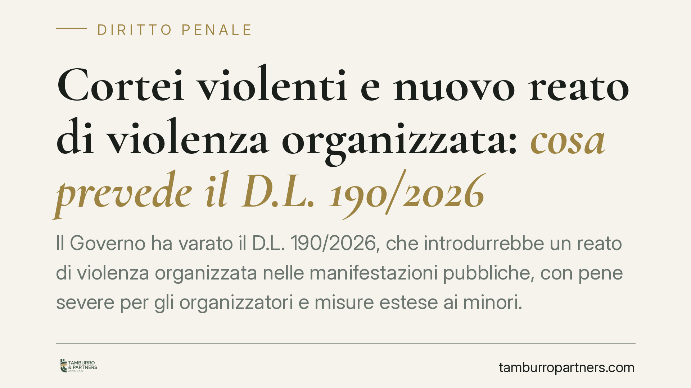

Cortei violenti e nuovo reato di violenza organizzata: cosa prevede il D.L. 190/2026
Il Governo ha varato il D.L. 190/2026, che introdurrebbe un reato di violenza organizzata nelle manifestazioni pubbliche, con pene severe per gli organizzatori e misure estese ai minori. Attenzione: si tratta di un decreto non ancora convertito e i cui riferimenti puntuali vanno verificati sul testo pubblicato in Gazzetta Ufficiale. Qui ne anticipiamo l'impianto, con le dovute cautele.

Premessa metodologica
Il D.L. 190/2026 è, allo stato, un decreto legge di recentissima adozione. Due avvertenze sono indispensabili prima di qualsiasi lettura.
Prima: il decreto legge deve essere convertito in legge dal Parlamento entro 60 giorni dalla pubblicazione, pena la decadenza con effetto retroattivo (art. 77 Cost.). In sede di conversione il testo può essere modificato anche in modo sostanziale.
Seconda: i riferimenti numerici al nuovo reato e alle singole disposizioni devono essere verificati sul testo pubblicato in Gazzetta Ufficiale. Quanto segue è una ricostruzione in corso di verifica e non un dato consolidato.
Inquadramento normativo
Secondo le prime notizie, il decreto introdurrebbe una nuova fattispecie di "violenza organizzata" nel contesto delle manifestazioni pubbliche, con cornice edittale che per gli organizzatori arriverebbe fino a dodici anni di reclusione. Il riferimento esatto dell'articolo introdotto — se collocato nel codice penale o in norma speciale — va riscontrato sul testo in G.U.: senza questo dato il lettore non è in grado di verificare né l'ambito applicativo né l'esatta condotta sanzionata.
Ogni nuova norma penale in materia va letta alla luce dell'art. 17 Cost., che garantisce la libertà di riunirsi pacificamente e senza armi. Il limite costituzionale è duplice: la tutela riguarda la riunione *pacifica*, ma la repressione penale non può tradursi in una compressione indiretta del diritto di manifestare. Sarà questo il principale terreno di scrutinio di legittimità della nuova fattispecie.
Minori: nessun automatismo
Il punto più delicato riguarda i minori. La soglia dell'imputabilità resta fissata dagli artt. 97 e 98 c.p.: non è imputabile chi, al momento del fatto, non aveva compiuto i quattordici anni; tra i quattordici e i diciotto anni l'imputabilità va accertata in concreto, valutando la capacità di intendere e di volere.
Anche ipotizzando che il decreto renda applicabili misure precautelari ai minori dai quattordici anni, resta fermo che custodia cautelare e arresto operano, per i minorenni, secondo i presupposti e i limiti del processo penale minorile (D.P.R. 448/1988), più stringenti rispetto a quelli ordinari. Il decreto non può "appiattire" questa disciplina: va letto come innesto su di essa, non come sua sostituzione. Presentare la custodia cautelare del minore come automatica sarebbe tecnicamente scorretto.
Quanto all'arresto in flagranza differita, non si tratta di un istituto inedito: esiste già nell'ordinamento, introdotto per le manifestazioni sportive (L. 401/1989 e successive modifiche). L'eventuale novità del decreto consisterebbe nell'estensione dell'istituto al contesto dei cortei, non nella sua invenzione. Inquadrare il precedente è utile per misurare continuità e differenze.
Le "sanzioni ai genitori": distinguere i piani
Le annunciate conseguenze a carico dei genitori non sono un blocco unitario. Occorre distinguere:
- il piano penale, eventuale e personale, che presuppone una condotta propria del genitore e non è responsabilità per fatto altrui;
- il piano amministrativo, se il decreto prevede sanzioni pecuniarie a carico degli esercenti la responsabilità genitoriale;
- il piano civile della responsabilità per danno cagionato dal minore, già disciplinato dall'art. 2048 c.c., con la possibilità per i genitori di provare di non aver potuto impedire il fatto.
Quale di questi piani il decreto effettivamente attivi è, nuovamente, da riscontrare sul testo.
Cosa cambia in concreto
Per chi partecipa a una manifestazione. Aumenta il rischio di contestazioni più gravi se la riunione degenera; la posizione individuale va distinta da quella del gruppo.
Per chi organizza. La cornice sanzionatoria più alta impone attenzione agli adempimenti di preavviso al questore e alla gestione concreta dell'evento.
Per le famiglie. Il coinvolgimento di un minore può attivare, su piani diversi, conseguenze penali personali, amministrative o civili.
Cosa fare in concreto
- Verificate il testo del decreto in Gazzetta Ufficiale e seguite l'iter di conversione nei 60 giorni.
- Se organizzate un evento, documentate preavviso, misure di sicurezza e istruzioni ai partecipanti.
- In caso di fermo o arresto, soprattutto di un minore, richiedete immediatamente l'assistenza difensiva e l'accesso agli atti.
- Conservate ogni elemento utile a distinguere la posizione individuale da quella del gruppo.
- Valutate per tempo i profili di responsabilità civile ex art. 2048 c.c. quando è coinvolto un minore.
Trattandosi di normativa in evoluzione, la lettura puntuale va effettuata sul testo definitivo e sugli atti del singolo caso.
Ogni condominio ha una storia a sé.
Se gestisci un'amministrazione e vuoi un confronto su una specifica questione condominiale, scrivi allo studio. Ti rispondiamo entro un giorno lavorativo.